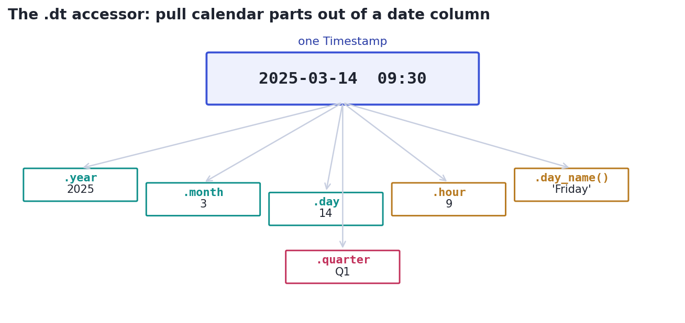

Dates & Times
Parse dates, extract calendar parts with .dt, and do date arithmetic — without the classic timestamp bugs.
Dates are everywhere in data — order dates, signups, timestamps, log entries — and they're a notorious source of bugs, because a date that arrives as the text "2025-03-14" is useless until Python understands it as a moment in time. Once it does, a world opens up: pull out the month or weekday, compute how many days between two events, and roll daily data up to monthly (the time-series EDA from Track 5). This lesson makes dates your friend.
ConceptParsing: text into real dates
Data almost always arrives with dates as strings. The first step is to convert them into pandas datetime values with pd.to_datetime(...), which understands most common formats automatically. Until you do this, a date column is just text — you can't sort it chronologically, subtract it, or extract parts from it. Always parse dates right after loading.
Concept · the calendar toolboxExtracting parts with .dt
Once a column is real datetimes, the .dt accessor (the date cousin of .str) pulls calendar pieces out of every row at once: .dt.year, .dt.month, .dt.day, .dt.hour, .dt.day_name() (Monday…), .dt.quarter. These are how you create features like 'month of purchase' or 'is it a weekend?' for analysis and modeling.

.dt extracts each one as a column. This is the raw material for seasonal analysis and date-based features.Concept · durationsDate arithmetic
Subtracting two datetimes gives a Timedelta — a duration — whose .days (or .total_seconds()) you can read off: (delivered - ordered).dt.days is delivery time in days for a whole column. You can also add durations (order_date + pd.Timedelta(days=30)) and build ranges with pd.date_range(...). Treating dates as quantities you can do math on is what makes questions like 'how long until churn?' answerable.
Worked exampleParse, extract, and measure in code
Convert text dates to real datetimes, pull out the month and weekday, and measure the span between the first and last order.
import pandas as pd
df = pd.DataFrame({"order_date": ["2025-01-05", "2025-03-14", "2025-12-25"]})
df["order_date"] = pd.to_datetime(df["order_date"]) # text -> real datetimes
df["month"] = df["order_date"].dt.month # extract calendar parts
df["weekday"] = df["order_date"].dt.day_name()
print(df.to_string(index=False))
span = df["order_date"].max() - df["order_date"].min() # a Timedelta (duration)
print(f"\nfirst to last order: {span.days} days")order_date month weekday 2025-01-05 1 Sunday 2025-03-14 3 Friday 2025-12-25 12 Thursday first to last order: 354 days
The .dt accessor only works once the column is actually a datetime dtype — calling .dt.month on a column of date strings raises an error. The fix is always the same: pd.to_datetime(...) first, then check with df.dtypes (you want datetime64, not object). Parsing dates is part of the cleaning ritual from Lesson 1.10.
★ Key points to remember
- Dates arrive as text; convert with
pd.to_datetime(...)before doing anything time-aware. - The .dt accessor extracts calendar parts column-wide:
.dt.year/month/day/hour,.dt.day_name(),.dt.quarter. - Subtracting datetimes gives a Timedelta; read
.dt.daysfor durations, and addpd.Timedelta(days=n)for date math. .dtrequires a datetime dtype — checkdf.dtypesshowsdatetime64, notobject.- A datetime index unlocks
resample()for rolling daily → monthly (Track 5 time-series).
df["date"].dt.month raises an error. What's the likely cause and fix?(df["delivered"] - df["ordered"]).dt.days computes what (assuming both are datetime columns)?order_date datetime column. Which approach works?◆ Practice▸
signup. Write expressions for (a) the signup year and (b) a boolean of whether each signup was in Q4.Show solution & reasoning
year = df["signup"].dt.year
is_q4 = df["signup"].dt.quarter == 4.dt.year extracts the year column-wide; .dt.quarter == 4 builds a boolean Series that's True for October–December signups — handy for seasonal cohort analysis.
ts of timestamps loaded as text. Write the two steps to (1) convert it and (2) verify the conversion worked.Show solution & reasoning
df["ts"] = pd.to_datetime(df["ts"]) # 1. parse text -> datetime
print(df["ts"].dtype) # 2. verify -> datetime64[ns]Convert with pd.to_datetime, then confirm the dtype is datetime64 (not object). If some values won't parse, add errors="coerce" to turn the bad ones into NaT (the datetime version of NaN) rather than raising.
◎ Deep dive: time zones, explicit formats & coercion, and epoch time▸
Time zones — the deepest date rabbit hole. A timestamp without a time zone is ambiguous: 9:00 where? pandas datetimes can be tz-naive (no zone) or tz-aware (anchored to UTC or a region). Mixing the two, or ignoring daylight-saving shifts, causes subtle off-by-an-hour bugs in logs and analytics. The professional habit: store and compute in UTC, and convert to a local zone only for display. Use tz_localize to attach a zone and tz_convert to change it.
Specifying formats and handling bad dates. When dates come in an unusual or ambiguous layout (is 01/02/2025 January 2nd or February 1st?), pass an explicit format= to pd.to_datetime (e.g., format="%d/%m/%Y") so there's no guessing. For columns with some unparseable junk, errors="coerce" converts the bad entries to NaT (Not a Time) instead of raising, letting you handle them as missing data afterward.
Under the hood: epoch time. Computers often store a moment as a single number — Unix/epoch time, the seconds since midnight UTC on Jan 1, 1970. You'll meet it in logs and APIs; pd.to_datetime(values, unit="s") turns those numbers into readable dates. Knowing this demystifies the giant integers that sometimes appear in 'date' columns, and connects to the time-series resampling and rolling tools from Track 5.
Date handling questions favor the careful: 'parse to datetime first, then use .dt'; 'subtracting dates gives a duration'; and the pro touch — 'store in UTC, convert for display' to avoid time-zone bugs. If a take-home has dates as text, the very first thing you do (and mention) is pd.to_datetime and a dtype check.